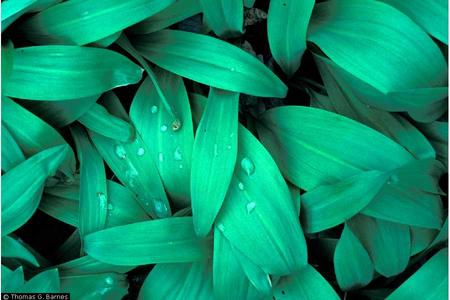

The leek species is a plant that can be found all over the world and has been used throughout human history, dating back to the days of ancient Egypt. Part of the Lily family (Liliaceae), wild leeks are a variation of the Allium species, which also includes plants like onions, garlics, chives, shallots, and other kinds of leeks. This species is known for being an edible and has a very distinctive and appetizing taste that is used to flavor many different types of cuisine. When used in ordinary cooking, it is the leaves of the plant that are being used. Wild leeks and their relatives also have a fairly pungent smell, especially evident when the skin of the plant is broken and the juices start flowing. Besides just being good for cooking, these plants are also known for their medicinal uses, and when eaten regularly they are said to keep the eater in good health. Other medicinal uses that this species is reputed to have is as an antiseptic, along with being good for helping asthma, bronchitis, coughs, colds, and is used as a vermifuge (to expel worms and parasites) (Seymour 172). Members of the wild leek’s family are also rumored to cure poison ivy, and the skins of some can even be used to create dyes.
Wild leek grows in rich woods and floodplain forests mainly where the soil is thick with nutrients, especially calcium, a mineral it prefers. Given that the soil in Vermont is rich in calcium due to the abundance of calcium rich rocks in this area, wild leeks are particularly suited to grow in Vermont. The floodplain forests, with their especially rich soils, where the leeks grow are home to many unique animals and plants. In fact, the botanical diversity of these rich forests is greater than anywhere else in Vermont, and the wild leek shares its habitat with plants such as bloodroot, blue cohosh, and other medicinals (Johnson 108). Wild leeks are also thought to grow near vernal pools in these rich woods of Vermont, which are depressions in the ground where water gathers and because no fish live there, other insects and microscopic creatures are able to breed and grow without being eaten or killed off. In the growth cycle of the wild leek, the leaves will start to emerge in the spring, but it is not until those leaves have died off that the flowers emerge sometime in late spring to early summer.
This is a plant that is very common and is found all over Vermont. It blankets forest floors, and is especially prominent near riverbanks (Johnson 108). The wild leek was originally called winooski by the Abenaki Native Americans who were native to Vermont. Because of the wild leeks’ abundant growth along the bank of the Winooski River, that river and the town nearby were named after this plant. After agriculture became widespread across the state of Vermont, farmers wanted to eradicate wild leeks because the cows would eat them and it made their milk taste like onions and so they would send their sons out to pick it in early spring (Emery). Wild leeks are a very hearty species though, and they still thrive all over Vermont.
The wild leek is a very common and valuable plant to the Vermont countryside. It can be used in many different ways, and has had a large societal impact as well, influencing the area so much as to have a river and a town named after it. While wild leek and its family members can be found all over the world and have been used for ages, its impact has not been forgotten in Vermont where it is still growing strong.
